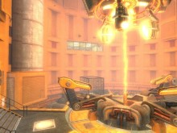
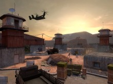
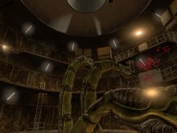
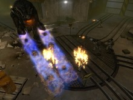
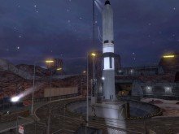
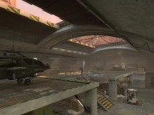
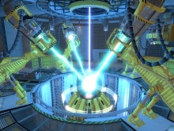

Can someone please make a menu background (animated, map) from these scenes (screenshots).
If possible, the camera view on the maps will be at the same angle I shot the pictures. Some of them really look cool as a background like WgH and OaR.
Advanced thank you!

I think those scenes look cool to be a background and some especially We’ve Got Hostiles and On A Rail.